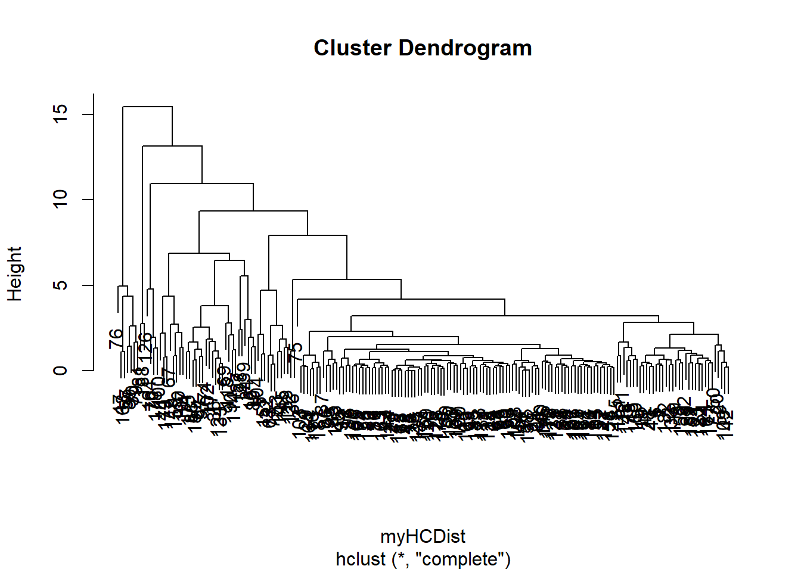
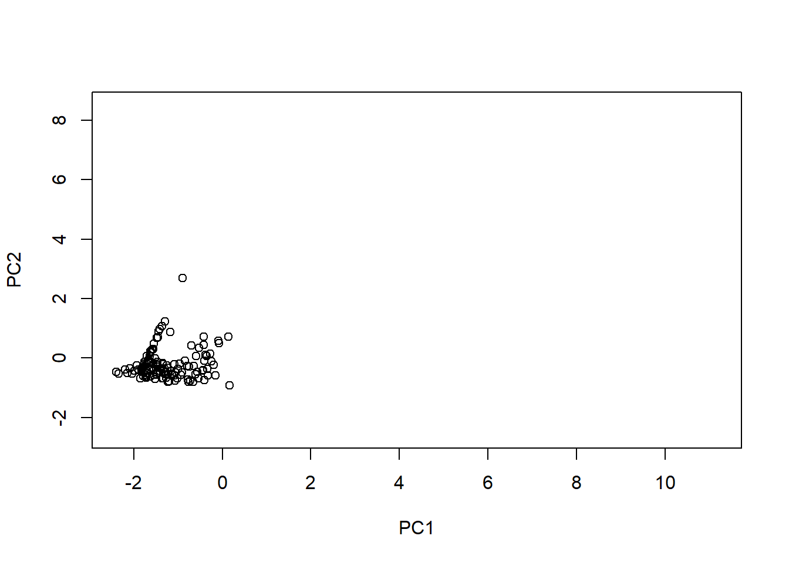

Distance Based Clustering
All the variables differ in scale which can be verified using: summary(myalchemySubset), hence we need to scale (divide by standard deviation) all variables, this can be achieved using the function named “scale”.
# To center and scale the data (normalization)
brokerHCDF <- scale(myalchemySubset, center=TRUE, scale=TRUE)
head(brokerHCDF)
## QuoteCount_2016 QuoteCount_2017 QuoteCount_2018 PolicyCount_2016
## [1,] -0.2955356 -0.4048377 -0.3796046 0.14470752
## [2,] -0.4577748 -0.5737336 -0.4885734 -0.07385284
## [3,] -0.5925581 0.1518932 -0.2306064 -0.16587826
## [4,] -0.1258084 -0.5706059 0.7590080 -0.61450215
## [5,] -0.5626063 5.3282393 0.4009677 0.63934411
## [6,] -0.1907041 -0.1577493 -0.2995459 0.07568846
## PolicyCount_2017 PolicyCount_2018 GWP_2016 GWP_2017 GWP_2018
## [1,] 0.02015343 0.01544948 0.01109877 -0.1516617 -0.18327433
## [2,] -0.13631801 -0.10511479 -0.12787748 -0.1833457 -0.02816983
## [3,] -0.29278945 -0.18183751 -0.23868017 -0.2451593 -0.32193001
## [4,] -0.62808540 -0.63121344 -0.65597316 -0.5389464 -0.60948072
## [5,] 0.41133203 0.77171629 -0.23868017 -0.2451593 -0.06645961
## [6,] -0.06925882 -0.12703557 0.04796681 -0.2655789 -0.22890709
## success_ratio16_18
## [1,] -0.3583157
## [2,] -0.5772911
## [3,] 0.1466954
## [4,] -0.1856545
## [5,] 3.2993371
## [6,] -0.3972832
Hierarchical Clustering
Clustering can be achieved using either distance based or density based methods. In this case, distance based clustering methods will work best . We can segment the brokers into 5 segments using two distance based clustering methods: The hierarchical clustering method and the K-means clustering method.
In the hierarchical clustering approach, we calculate the pairwise (euclidean) distance between the observations using the function “dist” and then cluster these using “hclust” function.
Subsequently, we need to find the number of clusters to which each broker belongs using the “cutree” function.
#Calculating pairwise distances between observations (default dist() function measures euclidean distance)
myHCDist <- dist(brokerHCDF)
head(myHCDist)
## [1] 0.4958177 0.9995419 1.8904891 6.9268765 0.3597904 0.3081979
Histogram of the distances (to help define a point's "neighborhood")
hist(myHCDist)

Using hclust function to do hierachical clustering- from the dendrogram, the height of the lines indicate distance between clusters
brokerHclust <- hclust(myHCDist)
plot(brokerHclust)

Obtaining cluster membership using cutree function- The numbers show the cluster to which each broker belongs
brokerCut <- cutree(brokerHclust, k=5) # 5 best clusters
brokerCut[1:20]
## [1] 1 1 1 1 1 1 1 1 1 2 1 1 1 2 1 2 2 1 1 1
Further, in order to visualize the clusters, we do the principal component analysis.
A silhouette plot (plot(brokerSil) shows how well each point fits to its cluster.
Principal Component Analysis
#PCA
# Plotting first two PC scores to visually evaluate the quality of the clusters- longer bar to the right indicates stronger cluster membership.
brokerHCPCA <- prcomp(brokerHCDF, retx=TRUE)
plot(brokerHCPCA$x[,1:2], col=brokerCut, pch=brokerCut)
legend("topright", title= "Alchemy -Broker Seg.- Hierarchical Clustering ", legend = 1:5, col = 1:5, pch = 1:5)

The quality of the cluster groups can be visually evaluated with the PCA plot from the first two PCs. Most clusters appear well defined and can be clearly distinguished.
Cluster 1 (black circles) and Cluster 2 (red triangles) seem more prominent.
Cluster 4 (blue x) looks to slightly overlap with Cluster 1.
A few outliers were spotted that needed to be further examined.
# Looking for "elbow" in plot
screeplot(brokerHCPCA)
The visual representation of the variance can be explained through the “scree plot”. The difference appears to gradually decrease after the first principal component, thus differences in the data are not captured only by the first few principal components. The 3rd and the 4th PCs need to be visualized as well.
# Silhouette plot to see how well each plot belongs to each cluster
brokerSil <- silhouette(brokerCut, myHCDist)
plot(brokerSil)
The silhouette plot for hierarchical clustering displayed well clustered groups for the most part.
All points for Cluster 3, Cluster 4, and Cluster 5 appear well grouped.
Cluster 1 contains a small number of points with negative coefficients.
Most points for Cluster 2 are well clustered. However, there is a larger number of points with negative coefficients which implies that the points could have probably been assigned to a different cluster.
The average silhouette coefficient appears good with a value of 0.55.
Outlier detection and removal
which(brokerHCPCA$x[,1] > 10)
## [1] 76
myalchemySubset <- myalchemySubset[-76,]
K-means Clustering
Using k-means clustering approach to segment brokers we can use the function “kmeans”.
To understand the presented patterns and be able to identify characteristics of each cluster group we need to evaluate the rotation matrix using the function “rotation”.
# Creating broker segments in to 5 groups using k-means clustering
brokerKmeans <- kmeans(brokerHCDF, centers=5)
# Plotting the clusters using PCA
brokerHCPCA <- prcomp(brokerHCDF, retx = TRUE)
plot(brokerHCPCA$x[,1:2], col=brokerKmeans$cluster, pch=brokerKmeans$cluster)
legend("topright", title= "Alchemy -Broker's Seg.- K-means Clustering", legend = 1:5, col = 1:5, pch = 1:5)

# Plotting each individual cluster to help determine characteristics - (update cluster # to the one to be analyzed)
for (i in 1:5)
{
plot(brokerHCPCA$x[,1:2], type="n")
points(brokerHCPCA$x[brokerKmeans$cluster==i, 1:2],
col = brokerKmeans$cluster[brokerKmeans$cluster== i],
pch = brokerKmeans$cluster[brokerKmeans$cluster== i])
}


The PCA plot to evaluate the quality of the cluster groups obtained with the K-means clustering approach can be observed above. The plot shows a total of five cluster groups with different sizes and densities.
Clusters appear better assigned and well separated in comparison to the hierarchical clustering approach.
# K-means clustering with 5 clusters of sizes 131, 29, 12, 13, 3
#
# Cluster means:
# QuoteCount_2016 QuoteCount_2017 QuoteCount_2018 PolicyCount_2016
# 1 -0.3068342 -0.3781926 -0.22556457 -0.4130648
# 2 0.9022804 0.1701201 0.15181956 0.5873815
# 3 0.4405728 3.0575279 0.08573662 0.2281055
# 4 0.7015156 0.7560208 0.38591397 2.7833593
# 5 -0.1258084 -0.6362876 6.36682337 -0.6145021
# PolicyCount_2017 PolicyCount_2018 GWP_2016 GWP_2017 GWP_2018
# 1 -0.4919194 -0.4874734 -0.3810617 -0.4231120 -0.4240929
# 2 0.9913555 0.9448148 0.4729498 0.7017169 0.7489131
# 3 0.2371644 0.2903726 -0.1027550 -0.1784607 -0.2087987
# 4 2.6715706 2.6821963 3.0311171 2.9874035 2.9362854
# 5 -0.6280854 -0.6312134 -0.6559732 -0.5389464 -0.6094807
# success_ratio16_18
# 1 -0.4800682
# 2 0.5180605
# 3 1.5806917
# 4 1.3770743
# 5 3.6649698
#
# Clustering vector:
# [1] 1 1 1 1 3 1 1 1 1 4 1 1 1 2 1 2 1 1 1 2 1 3 1 1 1 1 1 1 1 4 1 1 1 2 1 2 1
# [38] 1 1 1 1 1 1 4 1 1 4 1 1 2 1 1 3 1 1 1 4 1 1 1 1 1 3 1 1 1 4 1 2 2 1 1 1 2
# [75] 2 4 3 1 4 2 5 1 1 2 1 1 2 2 4 2 1 1 1 1 1 1 2 1 1 4 1 2 1 3 1 1 4 1 1 1 1
# [112] 1 1 2 1 1 1 2 1 1 3 1 1 2 1 3 1 2 1 1 1 1 2 1 1 5 1 1 2 1 3 1 1 1 3 1 1 1
# [149] 2 1 1 1 3 1 2 1 3 1 1 1 1 1 1 2 1 1 1 4 1 1 1 1 1 1 2 1 1 2 4 1 2 1 1 1 1
# [186] 1 1 5
#
# Within cluster sum of squares by cluster:
# [1] 104.96338 209.65115 83.34065 107.16159 18.55363
# (between_SS / total_SS = 72.0 %)
#
# Available components:
#
# [1] "cluster" "centers" "totss" "withinss" "tot.withinss"
# [6] "betweenss" "size" "iter" "ifault"
# Determining which variables are responsible for the variation in the data
summary(brokerHCPCA)
## Importance of components:
## PC1 PC2 PC3 PC4 PC5 PC6 PC7
## Standard deviation 2.4910 1.2507 1.0196 0.89092 0.41818 0.37359 0.20226
## Proportion of Variance 0.6205 0.1564 0.1040 0.07937 0.01749 0.01396 0.00409
## Cumulative Proportion 0.6205 0.7770 0.8809 0.96028 0.97777 0.99172 0.99582
## PC8 PC9 PC10
## Standard deviation 0.14980 0.12591 0.05956
## Proportion of Variance 0.00224 0.00159 0.00035
## Cumulative Proportion 0.99806 0.99965 1.00000
# Using principal component analysis to identify characteristics of each cluster.
brokerHCPCA$rotation
## PC1 PC2 PC3 PC4 PC5
## QuoteCount_2016 0.1737438 0.23802162 0.697357246 0.49459120 0.28992197
## QuoteCount_2017 0.2037561 0.33872873 0.340337733 -0.73523924 -0.18830152
## QuoteCount_2018 0.1063760 0.60339350 -0.501663481 0.34073673 -0.07260356
## PolicyCount_2016 0.3638513 -0.15232670 -0.205894098 -0.18788011 0.51464891
## PolicyCount_2017 0.3910313 -0.05818996 0.106782482 0.07607014 0.06119190
## PolicyCount_2018 0.3899349 -0.04123842 0.118105591 0.05992944 -0.05757329
## GWP_2016 0.3480959 -0.25972425 -0.233098566 -0.06757504 0.37727784
## GWP_2017 0.3753182 -0.19987459 -0.069909679 0.11330363 -0.34794530
## GWP_2018 0.3712609 -0.18390788 -0.009658718 0.15237555 -0.57826904
## success_ratio16_18 0.2824341 0.54314464 -0.138338160 -0.11576587 0.07412351
## PC6 PC7 PC8 PC9 PC10
## QuoteCount_2016 -0.24294391 0.1753603 -0.06534234 0.05455046 -0.03403150
## QuoteCount_2017 -0.18358516 0.1308877 -0.17350971 -0.26595951 -0.01439228
## QuoteCount_2018 -0.05820048 0.1760774 -0.23648449 -0.39895022 -0.04565784
## PolicyCount_2016 0.26841494 0.5002830 -0.33093017 0.25660261 -0.06453389
## PolicyCount_2017 0.37317332 -0.3850655 -0.17025414 -0.26330250 0.66100408
## PolicyCount_2018 0.46503105 -0.1547210 0.29875586 -0.28475549 -0.64409763
## GWP_2016 -0.61482395 -0.1187774 0.35068592 -0.30703581 0.02764954
## GWP_2017 -0.31125376 -0.3473289 -0.55428514 0.29626503 -0.26052658
## GWP_2018 -0.03443796 0.5401697 0.32270406 0.09128358 0.25533623
## success_ratio16_18 0.01597787 -0.2684920 0.38417832 0.60041075 0.08223208
# Determining variables responsible for variation in the data
brokerHCPCA$rotation[,1:3]
The Importance of principal components demonstrates that the variance explained by the first principal component: 62.05%, the difference explained by the second principal component: 15.64%, and the variance described by the third component: 10.40%.
The cumulative proportion of the difference described by the first two principal components was 77.70%.
PC1: The loadings obtained from the rotation matrix indicate that the first component appears to be associated with brokers with higher policy counts for 2017 and 2018 (with +.39 and +.38, respectively) and higher gross written premiums for 2017 and 2018 (with +.37). Agents with larger values on the first component will reveal large values for these variables.
PC2: The second principal component seem to relate to brokers with higher quote counts for 2018 (+.60) and higher success ratios between 2016 and 2018 (+.54). Agents with larger values on the second component will have large values for these variables.
PC3: The variation on the third principal component is a tradeoff between the number of quote counts for 2016 (+.69) and quote counts for 2018 (-.50).
# PC1 PC2 PC3
# QuoteCount_2016 0.1737438 0.23802162 0.697357246
# QuoteCount_2017 0.2037561 0.33872873 0.340337733
# QuoteCount_2018 0.1063760 0.60339350 -0.501663481
# PolicyCount_2016 0.3638513 -0.15232670 -0.205894098
# PolicyCount_2017 0.3910313 -0.05818996 0.106782482
# PolicyCount_2018 0.3899349 -0.04123842 0.118105591
# GWP_2016 0.3480959 -0.25972425 -0.233098566
# GWP_2017 0.3753182 -0.19987459 -0.069909679
# GWP_2018 0.3712609 -0.18390788 -0.009658718
# success_ratio16_18 0.2824341 0.54314464 -0.138338160
brokerKmeansSil <- silhouette(brokerKmeans$cluster, myHCDist)
plot(brokerKmeansSil)
The silhouette plot obtained from the k-means clustering also shows well clustered groups.
All points for Cluster 1, Cluster 4, and cluster 5 seem well grouped.
Cluster 3 has few points with negative coefficients.
Most points for Cluster 2 look nicely clustered. However, there are a number of points with negative coefficients which suggests that the points could have been allocated to another cluster.
The average silhouette coefficient looks good with a value of 0.56.